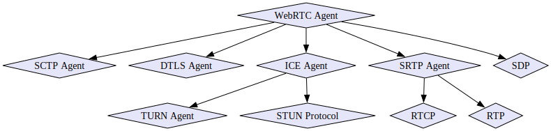

WebRTC (Web Real-Time Communication)
WebRTC (Web Real-Time Communication) is an open-source project that provides web browsers with peer-to-peer data sharing, without the need for intermediary servers. It leverages technologies like STUN and TURN for NAT traversal.
It provides a set of standardized APIs that facilitate real-time communication capabilities, allowing developers to build applications such as video conferencing, file sharing, and live streaming with minimal latency.
Since direct UDP communication is not available in browsers, WebRTC can serve as a close alternative by performing UDP-like communication with WebRTC Data Channels.
Protocols

Javascript API
// RTCPeerConnection // createOffer() // createAnswer() // setLocalDescription() // setRemoteDescription() // addIceCandidate() // getStats() // MediaStream // getTracks() // getAudioTracks() // getVideoTracks() // addTrack() // removeTrack() // RTCDataChannel // send() // close()
Topologies
One-To-One
- Connect two WebRTC Agents directly
Full Mesh
- Each user establishes a one-to-one connection with every other user directly
Hybrid Mesh
- Media is relayed through peers in the network
- Uses less bandwidth for each peer
- Increase in latency with every hop in the Hybrid Mesh network.
SFU (Selective Forwarding Unit):
- Client/server topology instead of P2P.
- Each WebRTC uploads to the SFU, which then forwards media to each client
MCU (Multi-point Conferencing Unit)
- Client/server topology, but output stream is composited
- Outbound media is re-encoded as one feed
Implementations
- WebRTC Native Code Reference Implementation
- pion/webrtc: Pure Go implementation of the WebRTC API
- A.K.V.S. Webrtc SDK: Pure C WebRTC Client for Amazon Kinesis Video Streams
- libpeer: Portable WebRTC Library for IoT/Embedded Device
- libdatachannel: C/C++ WebRTC library w/ Data Channels, Media, WebSockets
- datachannel-wasm: C++ WebRTC Data Channels for WASM in browsers
- PulseBeam: WebRTC Peer-to-Peer Communication SDK
Resources
- WebRTC For The Curious: Open-source book by WebRTC implementers